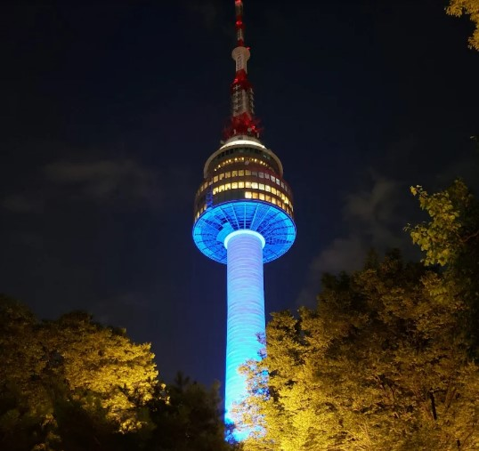
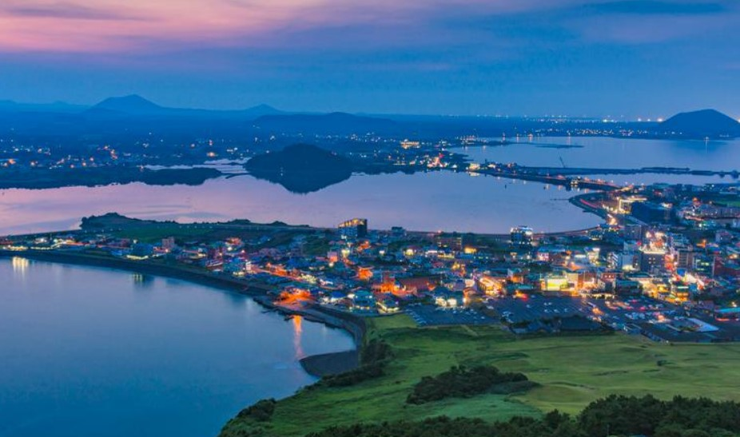
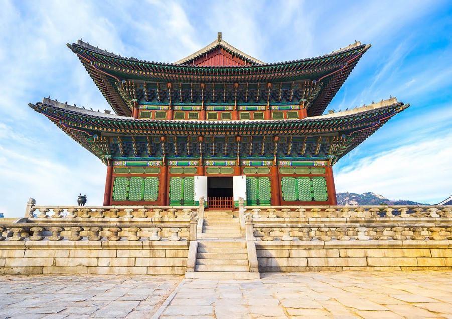
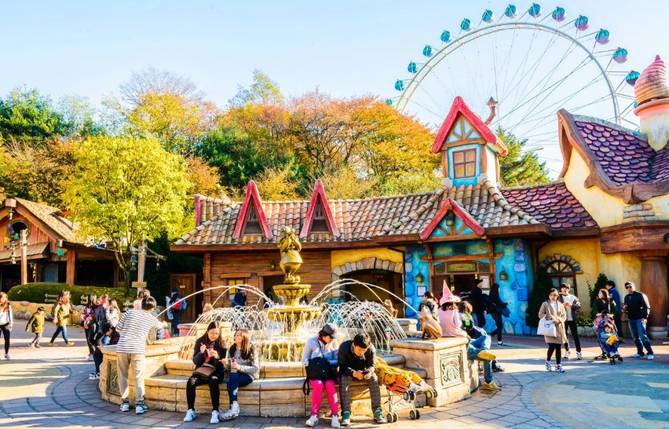
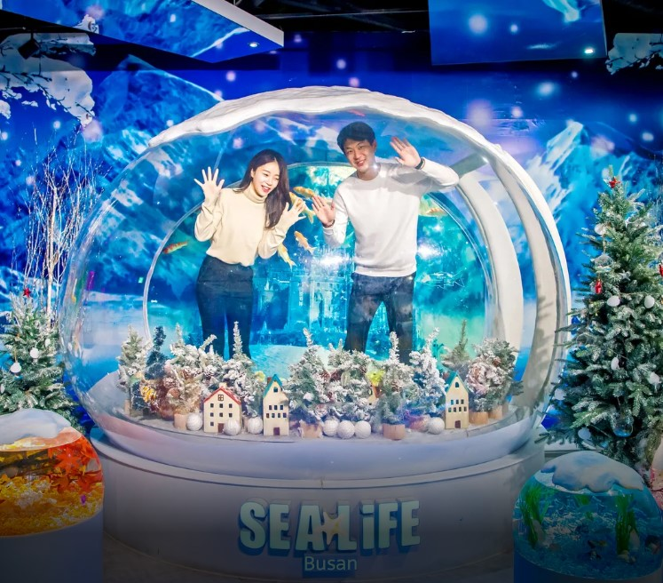
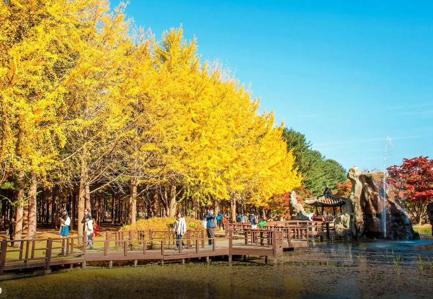
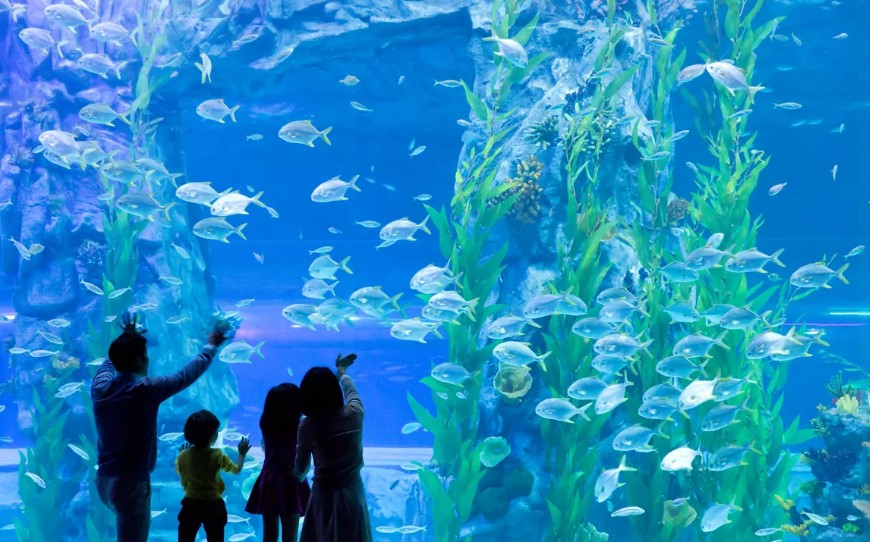
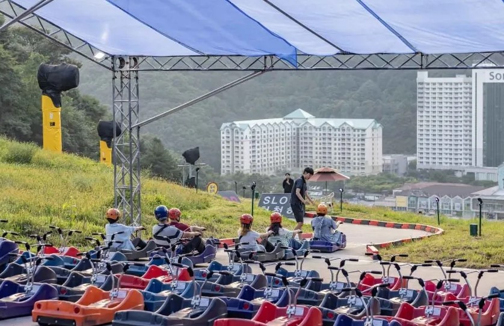

Temukan pesona budaya, alam, dan sejarah Korea yang menakjubkan!
Masih bingung menentukan destinasi di Korea? Tenang, Korea punya segalanya! Dari istana bersejarah, jalanan modern yang gemerlap, hingga panorama alam yang menakjubkan. Jelajahi kafe unik, pasar malam yang ramai, dan spot Instagramable yang sayang untuk dilewatkan. Yuk, temukan tempat terbaik dan buat perjalanan impianmu sekarang!
| Tempat | Lokasi | Deskripsi | Gambar | Harga | Tiket |
|---|---|---|---|---|---|
| Namsan Tower | Seoul | Menara komunikasi dengan pemandangan kota Seoul. |  | IDR 186.116 | Pesan |
| Jeju Island | Jeju | Pulau tropis dengan pantai dan pemandangan alam yang menakjubkan. |  | IDR 721.328 | Pesan |
| Gyeongbokgung Palace | Seoul | Istana kerajaan bersejarah dari Dinasti Joseon. |  | IDR 794.519 | Pesan |
| Lotte World Adventure | Seoul | Taman hiburan dengan wahana permainan dan pertunjukan. | |
IDR 270.848 | Pesan |
| Everland Theme Park Ticket with Lotte Duty | Gyeonggido | Taman hiburan dengan wahana permainan dan zoo. |  | IDR 438.586 | Pesan |
| SEA LIFE Busan Aquarium | Busan | Akuarium dengan berbagai spesies ikan dan hewan laut. |  | IDR 352.251 | Pesan |
| Nami Island and Mount Seorak | Gangwondo | Pulau dengan keindahan alam yang unik dan berbagai kegiatan. |  | IDR 952.408 | Pesan |
| Lotte World Aquarium | Seoul | Akuarium dengan berbagai spesies ikan dan hewan laut. |  | IDR 278.251 | Pesan |
| Garden of Morning Calm + Legoland or Hongcheon Luge World | Gangwondo | Taman dengan keindahan alam yang unik dan berbagai kegiatan. |  | IDR 987.540 | Pesan |